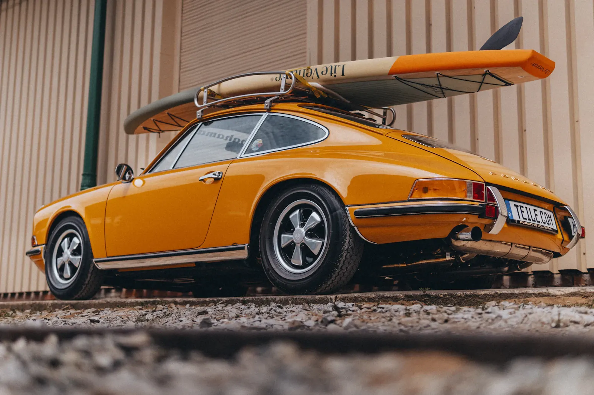
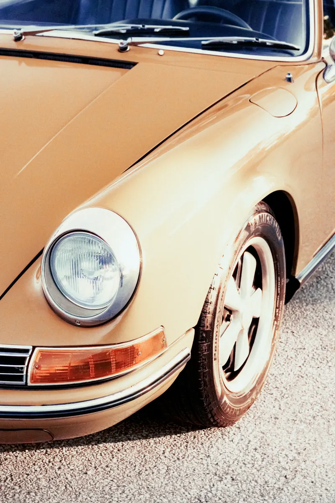

Время — часть
характера.

PATINAKEEP THE CHARACTER
От первого осмотра до возвращения на дорогу. Работаем с тем, что делает ваш автомобиль именно вашим.
Выбрать направление работ ↓I. Мастерская
Не всё старое
нужно делать новым.
Следы времени и технические неисправности — разные вещи. Сначала отделяем одно от другого, затем решаем, что сохранить, что восстановить и что заменить.
Небольшая царапина на родном руле может быть важнее идеального нового салона. А незаметный износ тормозной системы требует внимания в первую очередь. Приоритеты фиксируются в плане работ до начала разборки.
II. Направления
Степень вмешательства —
осознанный выбор.
CONSERVATION / 01
Сохранить то, что уже есть.
Подходит автомобилю, у которого сохранились родные материалы и детали. Очищаем, стабилизируем коррозию, ремонтируем локально. Оригинальные элементы меняем только при необходимости.
- Карта состояния кузова и салона
- Приоритет оригинальных деталей
- Фотофиксация до и после работ

Рабочая документация
У каждой детали
свой след.
Разборка, маркировка и ведомость деталей помогают не потерять связь между автомобилем и его историей. Отдельно согласовываем детали, которые придётся искать или изготавливать.
- До начала
- Состояние и цель восстановления
- В процессе
- Находки, изменения, согласования
- При передаче
- Перечень работ и рекомендации
Фотографии — иллюстрации направления, не выполненные заказы.
III. Порядок
Сначала изучить.
Потом разбирать.
- 01
Знакомство
Модель, год, история владения и ожидания: для поездок, коллекции или возвращения семейного автомобиля.
- 02
Осмотр
Изучаем комплектность, состояние кузова, силовые элементы, агрегаты и доступную документацию.
- 03
План и согласование
Определяем этапы, список деталей и бюджет. Скрытые дефекты обсуждаем до дополнительных работ.
- 04
Возвращение на дорогу
Проверяем системы и крепления. Передаём ведомость работ и рекомендации по обкатке и хранению.
IV. До первой встречи
Несколько важных вопросов.
Можно восстановить только один узел?
Да. В заявке можно указать отдельную задачу: двигатель, подвеску, тормоза или салон. При осмотре нужно проверить, не зависит ли она от состояния соседних систем.
Можно ли определить стоимость по фотографии?
Фотографии помогают понять масштаб, но не заменяют осмотр. Скрытая коррозия, прежний ремонт и комплектность влияют на план. Поэтому здесь нет универсального прайса «реставрация под ключ».
Что подготовить к первому разговору?
Марку, модель, год выпуска, фотографии кузова и салона, список известных проблем и доступные документы. VIN и личные документы не нужны в публичной форме.
V. Карточка автомобиля
Начнём
с его истории.
Заполните исходные данные. Из них получится краткая карточка для первого разговора с мастерской.
Motor Works